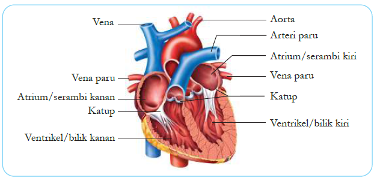
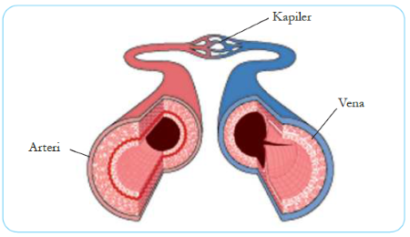

A. Pengertian dan Fungsi Sistem Peredaran Darah
Sistem peredaran darah (sistem kardiovaskular) adalah sistem organ yang berfungsi mengangkut zat-zat penting seperti oksigen, nutrisi, hormon, dan zat sisa metabolisme ke seluruh tubuh. Sistem ini juga berperan dalam menjaga suhu tubuh, melindungi tubuh dari penyakit, dan menjaga keseimbangan cairan tubuh.
Sistem peredaran darah manusia bersifat tertutup, artinya darah selalu mengalir di dalam pembuluh darah dan tidak pernah keluar dari pembuluh darah kecuali terjadi luka.
❤️ Fakta Menarik
Jantung manusia berdetak sekitar 100.000 kali per hari dan memompa sekitar 7.500 liter darah setiap harinya. Jika seluruh pembuluh darah dalam tubuh manusia direntangkan, panjangnya bisa mencapai 100.000 km — cukup untuk mengelilingi bumi lebih dari 2 kali!
B. Komponen Sistem Peredaran Darah
Sistem peredaran darah manusia terdiri dari tiga komponen utama: Darah, Jantung, dan Pembuluh Darah.
1. Darah
Darah adalah jaringan cair berwarna merah yang mengalir di dalam pembuluh darah. Volume darah pada orang dewasa sekitar 4–6 liter. Darah terdiri dari dua bagian utama:
a. Plasma Darah (±55%)
Plasma darah adalah bagian cair dari darah yang terdiri dari 90% air dan 10% zat terlarut, antara lain:
- Protein darah: Albumin (menjaga tekanan osmotik), Fibrinogen (pembekuan darah), Globulin (antibodi/imunitas)
- Sari-sari makanan: Glukosa, asam amino, asam lemak, vitamin
- Zat sisa metabolisme: Urea, asam urat, kreatinin
- Hormon, enzim, dan garam mineral
b. Sel-Sel Darah (±45%)
| Komponen | Nama Lain | Ciri-Ciri | Fungsi Utama |
|---|---|---|---|
| Sel Darah Merah | Eritrosit | Bentuk bikonkaf, tidak berinti, mengandung hemoglobin | Mengangkut oksigen (O₂) dari paru-paru ke seluruh tubuh dan mengangkut CO₂ kembali ke paru-paru |
| Sel Darah Putih | Leukosit | Bentuk tidak beraturan, berinti, dapat bergerak ameboid | Melawan infeksi, membunuh kuman penyakit, dan menghasilkan antibodi (sistem imun) |
| Keping Darah | Trombosit | Bentuk kecil, tidak beraturan, tidak berinti | Berperan dalam proses pembekuan darah (hemostasis) saat terjadi luka |
2. Jantung (Cor/Cardium)
Jantung adalah organ berotot yang berfungsi sebagai pompa untuk mengalirkan darah ke seluruh tubuh. Jantung terletak di rongga dada (mediastinum) sebelah kiri, di antara kedua paru-paru, dan dilindungi oleh selaput perikardium. Ukuran jantung kira-kira sebesar kepalan tangan pemiliknya.

Gambar 3.1: Struktur jantung manusia — Aorta, Arteri Paru-paru, Atrium (Serambi) Kiri & Kanan, Vena Paru-paru, Katup Jantung, Ventrikel (Bilik) Kiri & Kanan, Vena Kava
Jantung terdiri dari 4 ruang:
- Atrium Kanan (Serambi Kanan): Menerima darah kotor (miskin O₂, kaya CO₂) dari seluruh tubuh melalui Vena Kava Superior (dari tubuh bagian atas) dan Vena Kava Inferior (dari tubuh bagian bawah).
- Atrium Kiri (Serambi Kiri): Menerima darah bersih (kaya O₂) dari paru-paru melalui Vena Pulmonalis.
- Ventrikel Kanan (Bilik Kanan): Memompa darah kotor ke paru-paru melalui Arteri Pulmonalis untuk pertukaran gas. Dindingnya lebih tipis dibanding ventrikel kiri.
- Ventrikel Kiri (Bilik Kiri): Memompa darah bersih ke seluruh tubuh melalui Aorta. Dindingnya paling tebal karena harus menghasilkan tekanan yang sangat tinggi untuk mengedarkan darah ke seluruh tubuh.
Jantung dilengkapi dengan katup yang mencegah darah mengalir balik:
- Katup Trikuspid: Di antara atrium kanan dan ventrikel kanan
- Katup Bikuspid (Mitral): Di antara atrium kiri dan ventrikel kiri
- Katup Semilunar: Di pangkal arteri pulmonalis dan aorta
3. Pembuluh Darah
Pembuluh darah adalah saluran tempat mengalirnya darah. Terdapat tiga jenis utama:

Gambar 3.2: Perbandingan struktur penampang Arteri, Vena, dan Kapiler
| Ciri | Arteri (Pembuluh Nadi) | Vena (Pembuluh Balik) | Kapiler |
|---|---|---|---|
| Arah Aliran | Meninggalkan jantung → ke tubuh | Dari tubuh → menuju jantung | Menghubungkan arteriola dengan venula |
| Dinding | Tebal, kuat, sangat elastis | Tipis, kurang elastis | Sangat tipis (satu lapis sel endotel) |
| Katup | Tidak ada (kecuali katup semilunar di pangkal) | Ada (mencegah aliran balik darah) | Tidak ada |
| Tekanan | Tinggi (denyut terasa) | Rendah | Sangat rendah |
| Letak | Umumnya di bagian dalam tubuh | Umumnya di dekat permukaan kulit | Di antara sel-sel jaringan |
| Contoh | Aorta, Arteri Pulmonalis | Vena Kava, Vena Pulmonalis | Kapiler di paru-paru, usus, otot |
⚠️ Pengecualian Penting!
- Arteri Pulmonalis: Satu-satunya arteri yang membawa darah miskin oksigen (dari jantung ke paru-paru).
- Vena Pulmonalis: Satu-satunya vena yang membawa darah kaya oksigen (dari paru-paru ke jantung).
C. Mekanisme Peredaran Darah
Manusia memiliki sistem peredaran darah ganda dan tertutup. Disebut ganda karena darah melewati jantung sebanyak 2 kali dalam satu kali peredaran lengkap.
1. Peredaran Darah Kecil (Peredaran Paru / Pulmonal)
Beredar dari jantung ke paru-paru dan kembali ke jantung. Tujuannya: pertukaran gas (melepaskan CO₂ dan mengikat O₂ di alveolus paru-paru).
2. Peredaran Darah Besar (Peredaran Sistemik)
Beredar dari jantung ke seluruh tubuh dan kembali ke jantung. Tujuannya: mengedarkan O₂ dan nutrisi ke seluruh sel tubuh serta mengangkut zat sisa.
🔄 Siklus Lengkap
Darah yang kembali ke Atrium Kanan akan mengalir ke Ventrikel Kanan, lalu dipompa ke paru-paru (peredaran kecil). Setelah mendapat O₂ di paru-paru, darah kembali ke Atrium Kiri, lalu ke Ventrikel Kiri, dan dipompa lagi ke seluruh tubuh (peredaran besar). Siklus ini berlangsung terus-menerus sepanjang hidup.
D. Golongan Darah
Golongan darah ditentukan oleh ada atau tidaknya aglutinogen (antigen) pada permukaan sel darah merah dan aglutinin (antibodi) dalam plasma darah. Sistem penggolongan yang paling umum adalah sistem ABO yang ditemukan oleh Karl Landsteiner (1901).
| Golongan Darah | Aglutinogen (Antigen) pada Eritrosit | Aglutinin (Antibodi) pada Plasma | Dapat Mendonor ke | Dapat Menerima dari |
|---|---|---|---|---|
| A | A | Anti-B (β) | A, AB | A, O |
| B | B | Anti-A (α) | B, AB | B, O |
| AB | A dan B | Tidak ada | AB saja | A, B, AB, O (Resipien Universal) |
| O | Tidak ada | Anti-A dan Anti-B | A, B, AB, O (Donor Universal) |
O saja |
E. Gangguan dan Penyakit pada Sistem Peredaran Darah
| Penyakit | Penyebab / Keterangan |
|---|---|
| Anemia | Kekurangan sel darah merah atau hemoglobin. Gejala: pucat, lelah, pusing, sesak napas. Sering disebabkan oleh kekurangan zat besi (Fe). |
| Hipertensi | Tekanan darah tinggi (>140/90 mmHg). Meningkatkan risiko stroke, serangan jantung, dan gagal ginjal. |
| Hipotensi | Tekanan darah rendah (<90/60 mmHg). Gejala: pusing, lemas, pandangan kabur. |
| Arteriosklerosis | Pengerasan dinding pembuluh arteri akibat endapan kalsium. |
| Aterosklerosis | Penyempitan pembuluh darah akibat penumpukan plak lemak (kolesterol). |
| Stroke | Terputusnya aliran darah ke otak akibat pembuluh darah pecah atau tersumbat. |
| Serangan Jantung (Infark Miokard) | Tersumbatnya arteri koroner yang menyuplai darah ke otot jantung. |
| Varises | Pelebaran dan pembengkakan pembuluh vena, biasanya di kaki, akibat katup vena yang lemah. |
| Hemofilia | Penyakit keturunan (genetik) di mana darah sulit membeku karena kekurangan faktor pembekuan. |
| Leukemia | Kanker darah — produksi sel darah putih yang tidak terkendali sehingga mengganggu fungsi sel darah lain. |
F. Cara Menjaga Kesehatan Sistem Peredaran Darah
💡 Tips Jantung dan Pembuluh Darah Sehat
- Makan bergizi seimbang: Perbanyak sayur, buah, biji-bijian; kurangi lemak jenuh, garam, dan gula berlebih
- Olahraga teratur: Minimal 30 menit per hari (jalan kaki, bersepeda, berenang) untuk menguatkan jantung
- Menjaga berat badan ideal: Obesitas meningkatkan risiko hipertensi dan penyakit jantung
- Tidak merokok: Nikotin dan karbon monoksida dalam rokok merusak dinding pembuluh darah
- Mengelola stres: Stres kronis meningkatkan tekanan darah dan detak jantung
- Tidur cukup: 7–8 jam per hari untuk pemulihan sistem kardiovaskular
- Rutin cek kesehatan: Periksa tekanan darah, kolesterol, dan gula darah secara berkala
- Minum air putih cukup: Menjaga volume dan kekentalan darah tetap normal
G. Rangkuman
- Sistem peredaran darah terdiri dari darah, jantung, dan pembuluh darah.
- Darah terdiri dari plasma darah (55%) dan sel-sel darah (45%): eritrosit (mengangkut O₂), leukosit (melawan kuman), trombosit (pembekuan darah).
- Jantung memiliki 4 ruang: Atrium Kanan, Atrium Kiri, Ventrikel Kanan, Ventrikel Kiri. Ventrikel kiri berdinding paling tebal.
- Peredaran darah kecil: Ventrikel Kanan → Paru-paru → Atrium Kiri.
- Peredaran darah besar: Ventrikel Kiri → Seluruh Tubuh → Atrium Kanan.
- Golongan darah O = donor universal, golongan darah AB = resipien universal.
- Arteri meninggalkan jantung (tebal, tekanan tinggi), Vena menuju jantung (tipis, ada katup), Kapiler tempat pertukaran zat.
- Pola hidup sehat sangat penting untuk mencegah penyakit kardiovaskular.
H. Latihan Soal
A. Pilihan Ganda
- Komponen darah yang berfungsi mengangkut oksigen ke seluruh tubuh adalah...
- a. Leukosit
- b. Eritrosit
- c. Trombosit
- d. Plasma darah
- Ruang jantung yang memiliki dinding paling tebal karena harus memompa darah ke seluruh tubuh adalah...
- a. Atrium kanan
- b. Atrium kiri
- c. Ventrikel kanan
- d. Ventrikel kiri
- Pembuluh darah yang mengalirkan darah menuju jantung disebut...
- a. Arteri
- b. Vena
- c. Kapiler
- d. Aorta
- Urutan peredaran darah kecil yang benar adalah...
- a. Ventrikel kanan → Paru-paru → Atrium kiri
- b. Ventrikel kiri → Seluruh tubuh → Atrium kanan
- c. Atrium kanan → Ventrikel kanan → Seluruh tubuh
- d. Atrium kiri → Ventrikel kiri → Paru-paru
- Golongan darah yang dapat mendonorkan darahnya ke semua golongan darah lain disebut...
- a. Golongan A
- b. Golongan B
- c. Golongan AB
- d. Golongan O
B. Essay
- Sebutkan 3 komponen utama sel darah dan jelaskan fungsi masing-masing!
- Jelaskan perbedaan antara peredaran darah kecil dan peredaran darah besar! Sertakan urutan alirannya!
- Mengapa dinding ventrikel kiri lebih tebal dibandingkan dinding ventrikel kanan? Jelaskan!
- Sebutkan minimal 3 perbedaan antara arteri dan vena!
- Jelaskan apa yang dimaksud dengan donor universal dan resipien universal, serta sebutkan golongan darahnya!